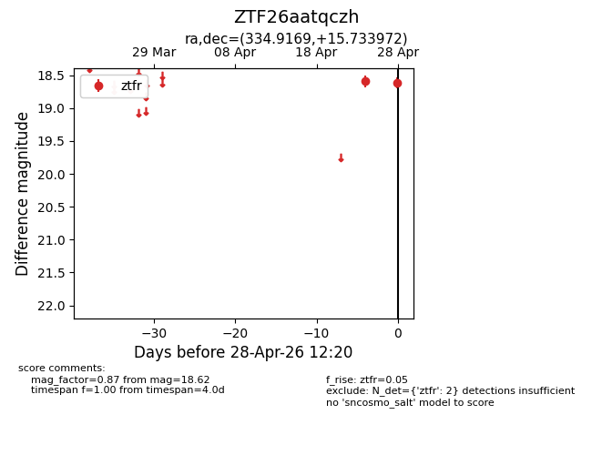
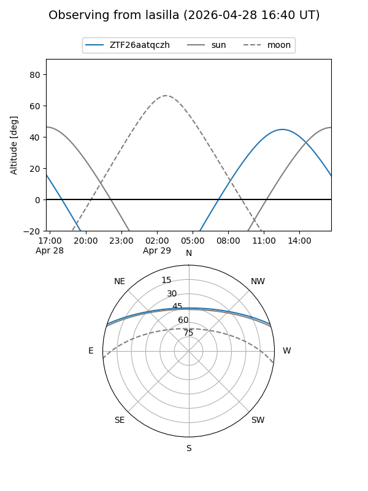
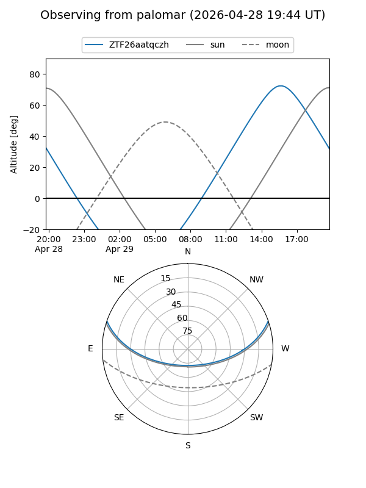
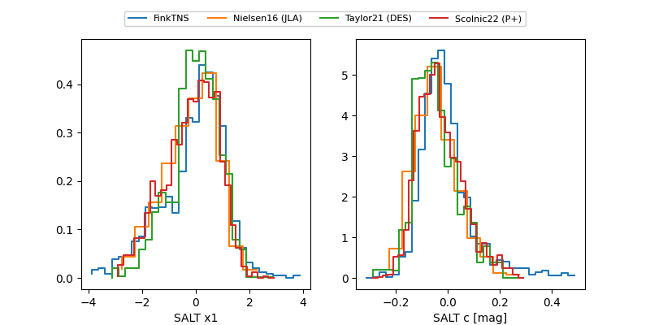

ZTF26aatqczh
Target ZTF26aatqczh at 2026-04-28 12:21
Aliases and brokers:
FINK: link
Lasair: link
ALeRCE: link
alt names
ZTF26aatqczh (ztf,fink_ztf)
Coordinates:
equatorial (ra, dec) = 334.9169,+15.73397
equatorial (HMS+DMS) = 22:19:40.06,+15:44:02.30
galactic (l, b) = (77.7198,-33.49892)
Flags:
Photometry:
last ztfr=18.62
2 ztfr detections
Lightcurve

Visibility


Additional plots
